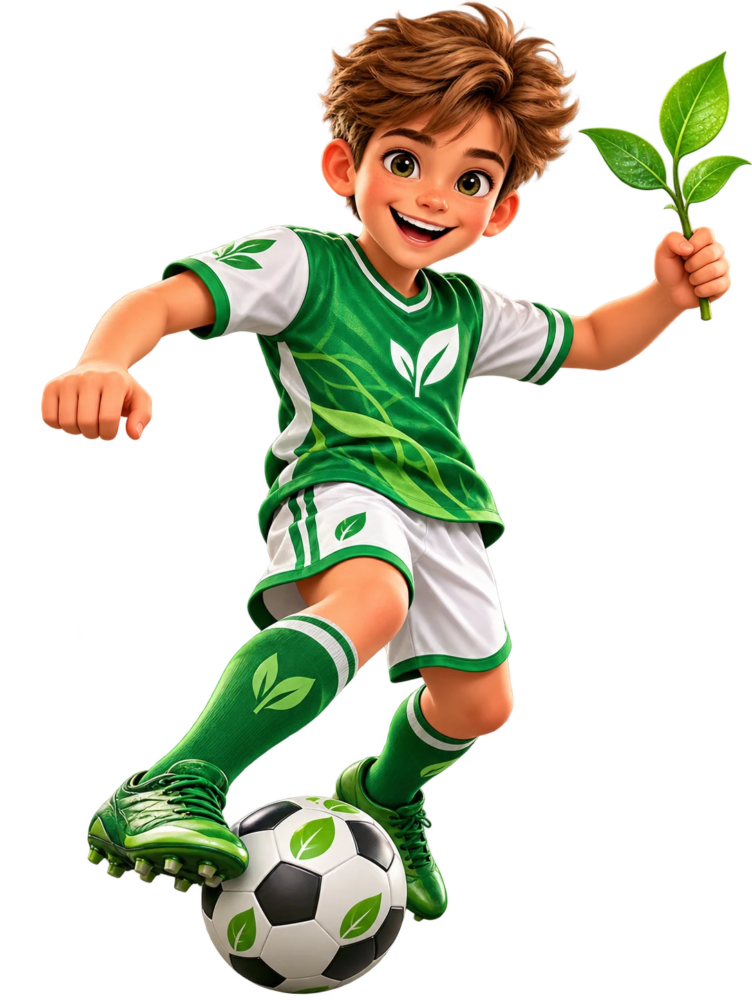

Биология · 5 класс
95 тем · 14 смысловых блоков
Тренер Чисел
Егор, маршрут по биологии готов! После каждого смыслового блока тебя ждёт отдельное тестирование по всем темам этого блока. Уроки будем открывать постепенно.
Егор, маршрут по биологии готов! После каждого смыслового блока тебя ждёт отдельное тестирование по всем темам этого блока. Уроки будем открывать постепенно.

Блок 1. Основы биологии
Блок 2. Входим в ботанику
Блок 3. Семя — начало новой жизни
Блок 4. Корень
Блок 5. Побег
Блок 6. Лист — лаборатория растения
Блок 7. Как работает целое растение
Блок 8. Цветок и появление нового поколения
Блок 9. Плоды, семена и размножение
Блок 10. Путешествие по царству растений
Блок 11. Однодольные, двудольные и семейства
Блок 12. Грибы, бактерии и лишайники
Блок 13. Жизнь растений в природе
Блок 14. Растения и человек
После каждого из 14 блоков добавлено итоговое тестирование по всему блоку. Пока тесты закрыты — будем наполнять их вместе с уроками.